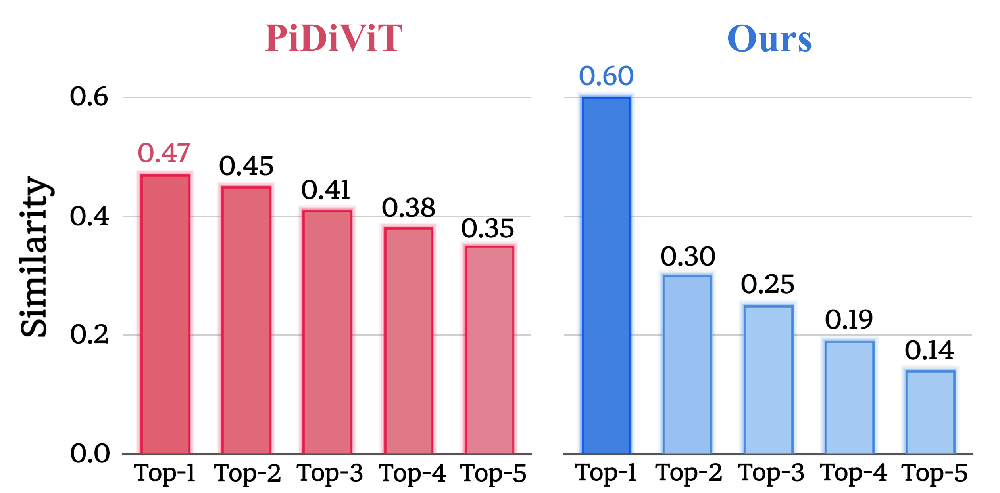
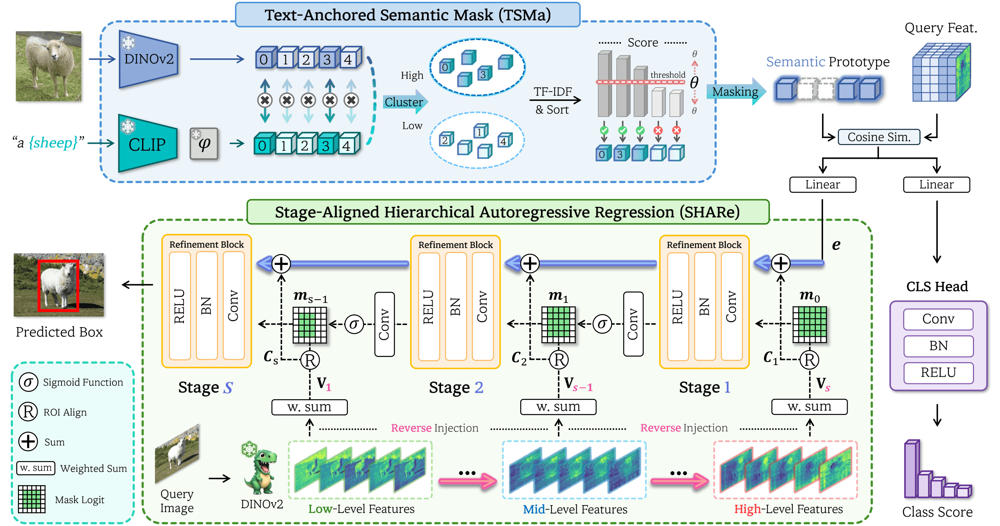
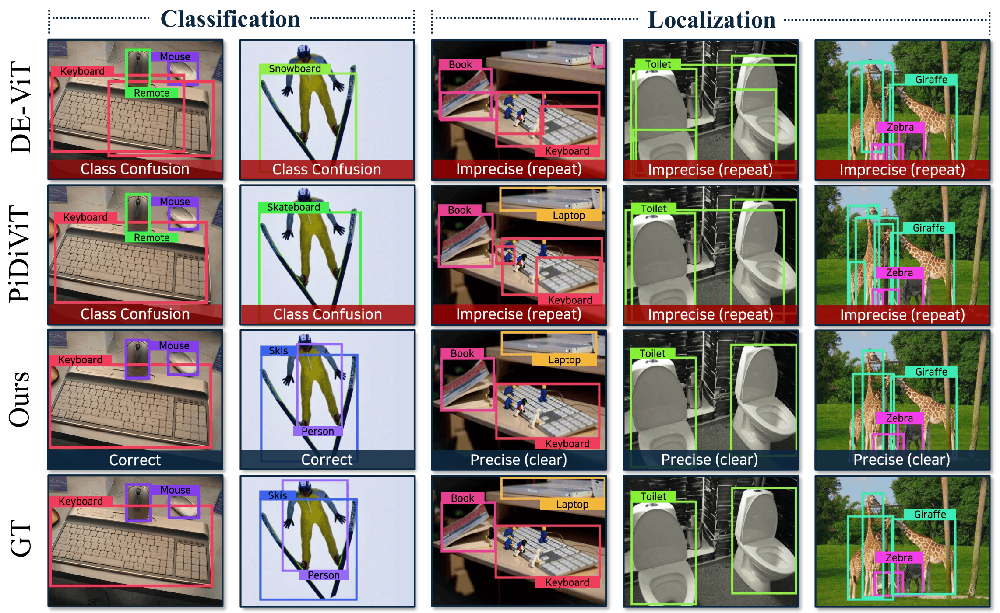

- We identify two fundamental bottlenecks of prototype-based similarity learning in few-shot object detection: inter-class similarity margin collapse causing class confusion, and insufficient visual cues for precise localization.
- We propose Text-Anchored Semantic Mask (TSMa), which leverages text features as semantic anchors to identify semantically co-activated channels, suppress style-induced spurious responses, and construct class-discriminative Semantic Prototypes.
- We introduce Stage-Aligned Hierarchical Autoregressive Regression (SHARe), which reformulates localization as progressive box refinement by injecting hierarchical ViT features in a stage-aligned manner, from high-level semantic cues to low-level spatial details.
- Extensive experiments on COCO and Pascal VOC demonstrate state-of-the-art performance across one-shot and 10/30-shot settings, validating the effectiveness of text-anchored semantic prototypes and hierarchical autoregressive localization for prototype-based FSOD.
Why Unified 3D-AD Fails: Inter-Category Entanglement
We analyze the latent space of a unified baseline and observe that semantically different categories form heavily overlapping feature clusters rather than distinct semantic manifolds. In particular, categories such as chicken, duck, and gemstone exhibit clear entanglement in the latent space. Furthermore, normal samples with lower category classification scores tend to show higher reconstruction errors, indicating that incorrect semantic understanding leads directly to incorrect reconstruction. These observations confirm that ICE is not a random side effect, but a systematic bottleneck in unified 3D anomaly detection.

T-SNE visualization and quantitative analysis of semantic disentanglement. Compared with MC3D-AD, SeDiR forms better-separated category-aware manifolds, improves category classification confidence, and reduces normal reconstruction error.
Proposed Method
ReSet follows a simple principle: build class-discriminative evidence for what to detect and progressively recover spatial evidence for where to localize. Given a few support examples, ReSet first constructs visual prototypes and refines them into Semantic Prototypes by using text features as semantic anchors. This suppresses style-induced, class-agnostic channels and enlarges inter-class similarity margins for more reliable class separation. For localization, ReSet progressively refines object boxes by injecting hierarchical ViT features, using high-level semantic cues for coarse localization and low-level spatial cues for precise boundary refinement. This design enables both robust classification and accurate localization in prototype-based few-shot object detection.

Overall architecture of ReSet. Our framework consists of two main components: Text-Anchored Semantic Mask (TSMa) and Stage-Aligned Hierarchical Autoregressive Regression (SHARe). TSMa constructs Semantic Prototypes by identifying channels co-activated by visual and text features, thereby mitigating inter-class similarity margin collapse and class confusion. SHARe reformulates localization as a hierarchical autoregressive refinement process, injecting multi-level ViT features in a stage-aligned manner to compensate for the limited spatial cues of similarity scores.
Qualitative Results
SeDiR produces more semantically consistent and spatially precise anomaly localization across diverse categories. Compared with a previous unified model (MC3D-AD), it better highlights true anomalous regions while reducing false responses on normal surfaces. These qualitative results support the claim that disentangling semantic identity before reconstruction leads to more reliable anomaly detection and localization.


Qualitative comparison between MC3D-AD and SeDiR. SeDiR provides more accurate and complete localization by reconstructing features under the correct semantic prior.
Citation
@article{kim2026semantically,
title={A Semantically Disentangled Unified Model for Multi-category 3D Anomaly Detection},
author={Kim, SuYeon and Lee, Wongyu and Cho, MyeongAh},
journal={arXiv preprint arXiv:2603.25159},
year={2026}
}